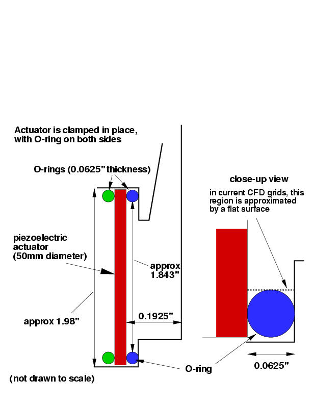

|
Public Access (formerly Langley Research Center)Turbulence Modeling Resource |
Exp: CFDVAL2004 Case 1 Frequently Asked Questions
Return to: CFDVAL2004 Case 1 - Intro Page
Return to: CFDVAL2004 - Intro Page Return to: Data from Experiments - Intro Page Return to: Turbulence Modeling Resource Home PageQ:How is the "phase angle 0 deg" defined in the experiment?
A:The phase angle in the experiment is based on the input voltage that drives the actuator (see the file "BCs from PIV experiment" under Case 1 Details and Submission Guidelines). There is naturally a phase lag between the voltage input and the actual velocity that emanates from the slot opening. It ends up that the peak (maximum) velocity out of the slot occurs somewhere between 0 and 90 deg, as shown in the second figure on that webpage (plot of velc_combined.dat). Ultimately, the goal is to align CFD's phase to approximately match the PIV experiment as best as possible over the course of the entire 360 degrees of phase at the slot exit shown in this figure. We have tried to choose criteria for determining phase that approximates experiment at this location AND is specific enough so that different CFD solutions can be meaningfully compared. This method is described near the bottom of the above-mentioned webpage. Although participants are given some latitude to determine phase as appropriate, we encourage everyone to use the prescribed method for consistency, if possible.
Q:What is the volume of the cavity?
A:The nominal volume of the cavity in Case 1 is approximately 0.46065 in3 (computed from the 3-D structured grid). This includes the volume of the slot up to the tunnel floor.
Q:Can you give some details about the physical properties of the diaphragm?
A:The Case 1 diaphragm is a Murata piezo-electric type 7BB-50M-1. It has a 50mm diameter brass shim with thickness 0.2mm. The piezoceramic part is 23mm in diameter. The total thickness of piezoceamic + epoxy + shim is 0.44mm. The mudulus of elasticity for brass is 15.e6 psi.
Q:The file "BCs from PIV experiment" (under Case 1 Details and Submission Guidelines) lists the voltage to the diaphragm prior to being amplified. What is the voltage actually received by the diaphragm after amplification?
A:Input voltage to piezo-electric diaphragm is +100.97 volts to -102.58 volts.
Q:How is the piezo-electric actuator held in place?
A:Here is a rough sketch
showing some case 1 cavity details:

Return to: CFDVAL2004 Case 1 - Intro Page
Page Curators: Christopher Rumsey,
Ethan Vogel,
Clark Pederson
Last Updated: 05/15/2021